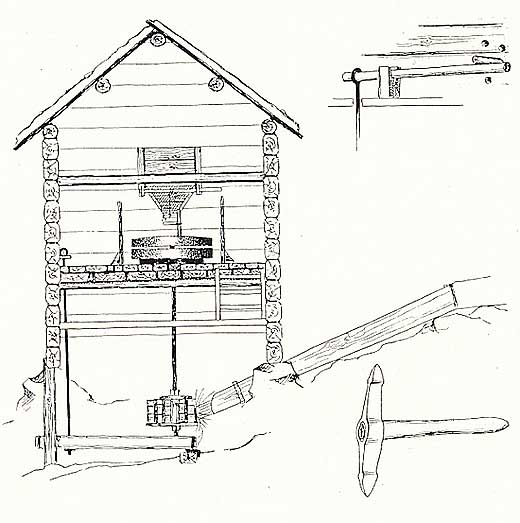

Skvaltkvarn
mitten av 1800-talet

I den s.k. ”kvarntuten” fyller man på säd, som genom en särskild anordning skakas ner genom hålet ”kvarnögat” i den övre stenen och sedan males mellan stenarna. De meterhöga sidoväggarna ”mjölkaret” samlar upp mjölet som från bordet ”laven” rakas ned med en träraka. Drivkraften kommer från vattnen som leds från bäcken ned genom ”stuphornet” mot ”drifthjulet” som då börjar att rotera.
Den övre kvarnstenen är förenad med driftshjulet genom en stång ”snes” som är lagrad nedtill i ”lättstocken”. I denna är fästad en hävarm, vilket man inifrån kvarnen (se detaljteckning) med en flyttbar kil i väggen kunde justera avståndet mellan stenarna.
Om någon till äventyrs maler med för litet avstånd mellan stenarna får man användning för kvarnhackan som varje kvarndelägare har. Med denna kan man förbättra räfflorna i stenarna.